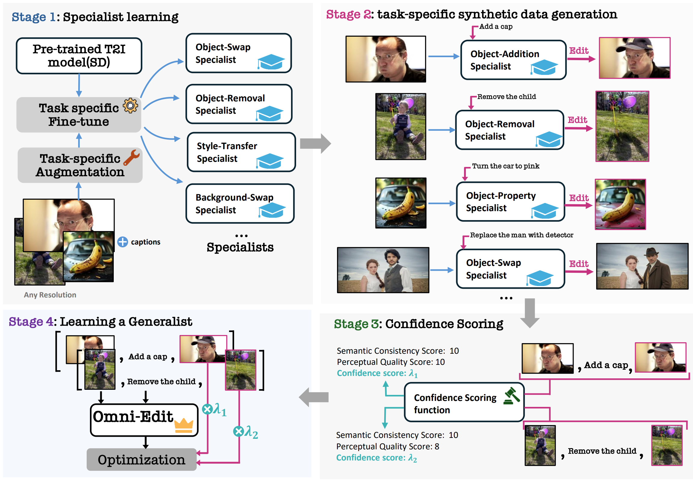
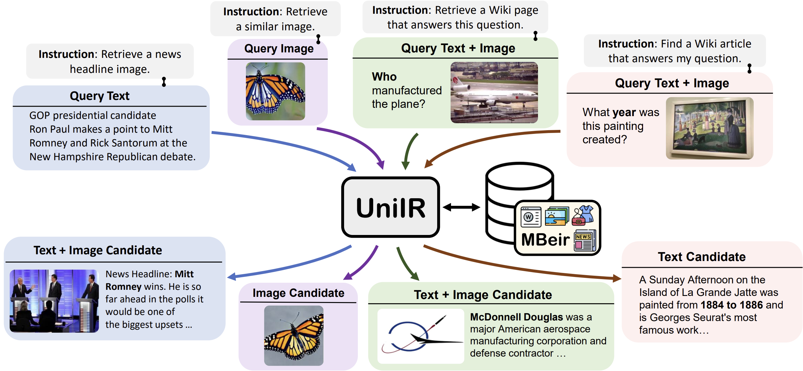
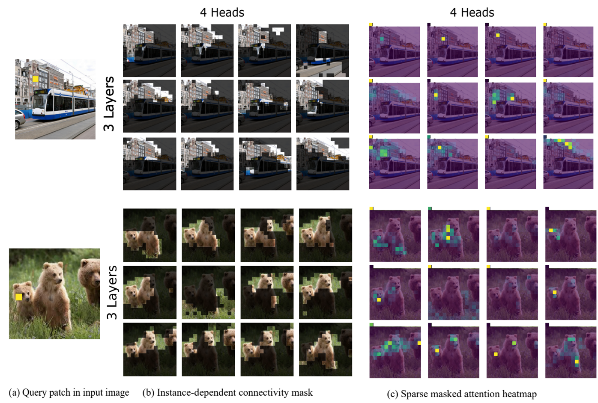
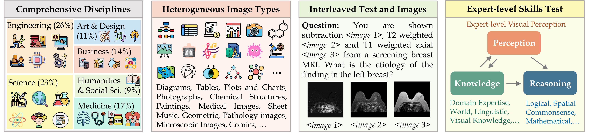

|
Cong Wei I am a 2nd year PhD student in Computer Science at University of Waterloo, advised by Wenhu Chen. Previously, I earned my master’s degree in Computer Science from the University of Toronto, where I was advised by Florian Shkurti. I also completed my undergraduate studies at the University of Toronto, working under the supervision of David Duvenaud. During my undergraduate years, I was a student researcher at the Vector Institute, advised by David Duvenaud and Gennady Pekhimenko. Email / Google Scholar / Twitter / Github / Linkedin |
News
02/2025: Our paper
OmniEdit is accepted to ICLR 2025.
10/2024: I will join Meta GenAI as a Research Scientist Intern in 2024 Winter.
|
Research- I'm currently interested in Simulation (Diffusion) and Reasoning (LLM), and how to make them Efficient. - Previously, I did research on multimodal retrieval and image/video editing. |
|  |
OmniEdit: Building Image Editing Generalist Models Through Specialist Supervision
Cong Wei*, Zheyang Xiong*, Weiming Ren, Xinrun Du, Ge Zhang, Wenhu Chen ICLR 2025 paper / dataset / website / tweet A method to scale up image editing training data: Multi-Experts generation + LLM filtering |
|||||
|  |
UniIR: Training and Benchmarking Universal Multimodal Information Retrievers
Cong Wei, Yang Chen, Haonan Chen, and Hexiang Hu, Ge Zhang, Jie Fu, Alan Ritter, Wenhu Chen ECCV 2024 (Oral Presentation)(Top 10% of accepted papers) paper / website / tweet the first unified multimodal retriever to handle all types of information seeking needs. |
|||||
|
|
AnyV2V: A Tuning-Free Framework For Any Video-to-Video Editing Tasks
Max Ku*, Cong Wei*, Weiming Ren*, Harry Yang, Wenhu Chen TMLR 2024 (TMLR Reproducibility Certification) tweet / website / paper A Training-Free Framework for Any Video-to-Video Editing Tasks |
|||||
|  |
Sparsifiner: Learning Sparse Instance-Dependent Attention for Efficient Vision Transformers
Cong Wei*, Brendan Duke*, Ruowei Jiang, and Parham Aarabi, Graham W Taylor, Florian Shkurti CVPR 2023 paper / website / video A method to LEARN non-structural Sparse Attention for Transformers |
|||||
|  |
MMMU: A Massive Multi-discipline Multimodal Understanding and Reasoning Benchmark for Expert AGI
Xiang Yue, Yuansheng Ni, Kai Zhang, and Tianyu Zheng, Ruoqi Liu, Ge Zhang, Samuel Stevens, Dongfu Jiang, Weiming Ren, Yuxuan Sun, Cong Wei, others CVPR 2024 (Oral Presentation)(Best Paper Finalist) paper / website / A large scale benchmark |
Education |
||||||
|

Experience |
||||||
|

{kind=link}
|
|
|
Website source from Jon Barron |